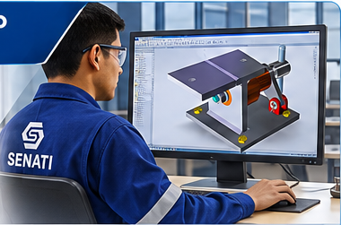

3 años de formación6 semestres académicosCAD · BIM tecnologías
Gata mecánica · animación ilustrativa
Gata mecánica · Simulación de elevación
OFERTA ACADÉMICA
Diseña, modela y construye el futuro
Dos especialidades técnicas orientadas a la transformación digital de la industria.

CAD / CAE / CAM
01 / DISEÑO MECÁNICO
Diseño y Desarrollo de Máquinas
3 años · 6 semestres · Profesional Técnico
Diseña y desarrolla productos y proyectos metalmecánicos, planos de estructuras y sistemas industriales con soluciones CAD/CAE/CAM, calidad y productividad.
Integra ingeniería inversa mediante escaneo 3D y manufactura aditiva con impresión 3D.
Los videos se reproducen automáticamente en silencio. Usa el botón de cada video para pausar o reanudar.
METODOLOGÍA SENATI
Aprender haciendo, crecer trabajando
Formación práctica con enfoque industrial y herramientas digitales.
⚙
Aprendizaje dual
Formación que combina el aprendizaje técnico con experiencias en entornos reales de trabajo y colaboración con empresas.
↗
Inserción laboral
98.6% indicador de inserción laboral de egresados durante el primer año, según el dato proporcionado para esta página. Verificar fuente y periodo antes de publicar.
▣
Infraestructura tecnológica
Talleres, laboratorios y aulas equipadas para formación digital e industrial.
DA EL SIGUIENTE PASO
Tu futuro en la industria comienza aquí
Solicita información sobre requisitos, carreras e inscripciones.